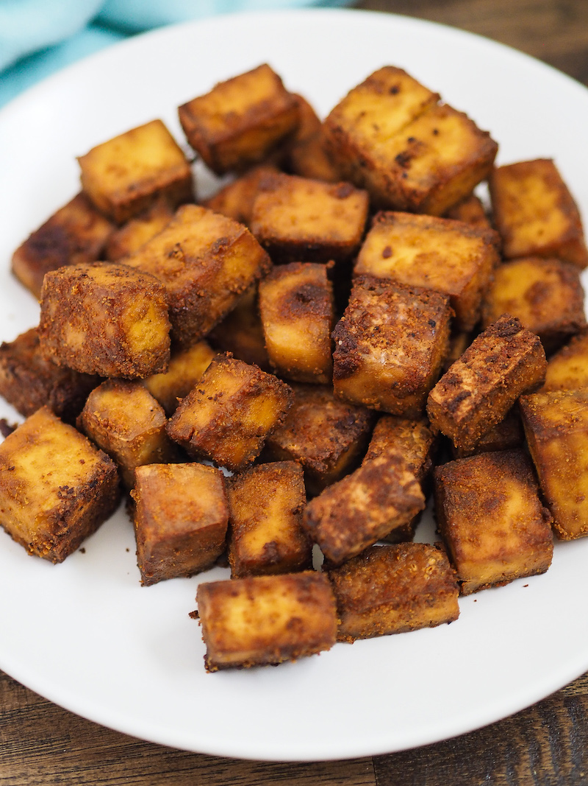

Crispy Baked Tofu

Taco Tuesday, every Tuesday. I've been eating this dish basically every week since 2019. It is great and simple and easy. The recipe is versitle and can be added to any dish as an accompaniment.
Serving: 3 - 4
Preperation time: 10 minutes
Cook time: 35 minutes
Idle time: 70 minutes
- 1 16-ounce block extra-firm tofu
- 4 tablespoons nutritional yeast
- 3 tablespoons soy sauce
- 1/2 teaspoon cumin
- 1 tablespoon extra virgin olive oil
Steps
- Drain tofu and cut into 3/4-inch cubes. Leave to dry on a paper towel-lined baking sheet for 30 minutes.
- In a large bowl, whisk together soy sauce, nutritional yeast, cumin and olive oil. Season with black pepper. Add tofu cubes, toss to coat, and marinate at least 30 minutes.
- Heat oven to 350 degrees C. Place tofu cubes evenly on a large baking sheet lined with oiled parchment paper, drizzling with extra marinade. Bake 35-40 minutes until golden, flipping halfway.